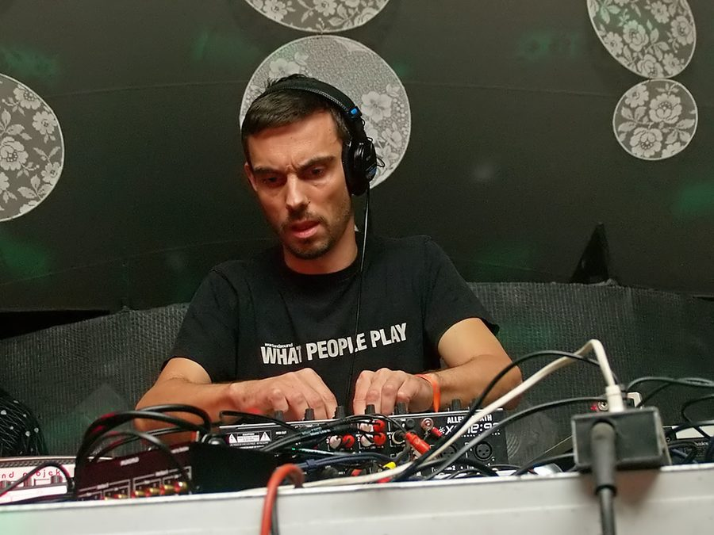

Steve Bug's full tour dates announced



We already knew that Poker Flat kingpin Steve Bug would be back in the country in early November, and now we know the full range of dates when he’ll be playing. Kicking off at a special Melbourne Cup Day Party at Alumbra on a Tuesday night, he’ll be ripping around the east coast before the week is done with a tour that includes a performance at an extra special boat party in Sydney.
Steve Bug will be here in support of his recent artist album Collaboratory, as well as the second compilation in NRK Music’s The Lab series that he’s mixed which will be hitting the stores in October. In terms of his heritage in house and techno, he’s a man who needs little introduction. He got his start in Germany’s first wave of techno and acid house and techno in the early 90s, really kicking things along when he established his groundbreaking Poker Flat record label later in the decade, which is still going plenty strong after celebrating its tenth anniversary last year. He’s also just completed an appearance on BBC1’s Essential Mix.
Steve Bug tour dates:
Tues 3rd Nov – Melbourne Cup Day Party @ Alumbra, Melbourne
Fri 6th Nov – Subtrakt @ Barsoma, Brisbane
Sat 7th Nov – Pulse Radio @ Agwa Yacht Club, Sydney
Sun 8th Nov – Cuckoo Club, Adelaide